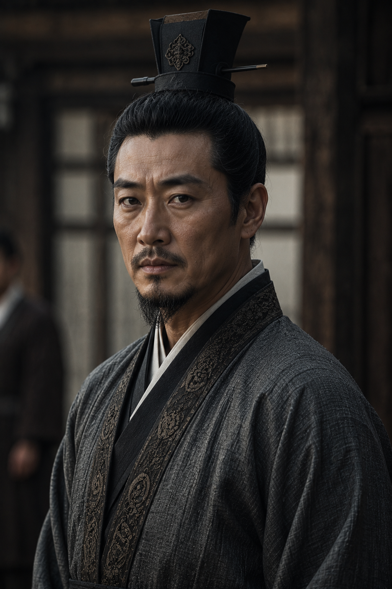

이름: 왕충 (王充)
성별: 남
나이: 45세 (EP31 기준) → 52세 추정 (EP145 기준)
출신: 낙랑군 (현 황해도·평양 일대) / 한나라 계열
직책: 낙랑 태수 소속 외교관 (현재 입지 약화)
신분: 외교 채널 NPC (중립→간접 활용)
기록 없음.
EP31: 첫 만남. 백제의 성장 속도 경계하며 교역 타진.
EP35: 교역 협상 타결 후 귀환.
EP96~: 새 태수(반대파) 취임. 왕충 견제 시작. 연락 빈도 계절 1회로 축소.
EP142: 서신 직접 발송 불가. 서기 통한 우회 경로로 전환.
EP145: 서기가 "태수부 북쪽 병력 집결 소문" 직접 전달 — 간접 정보 채널로만 기능.
현재 관계: 입지 약화된 간접 정보 채널. 직접 연락 불가.
충성도/활용도: 중립→활용 (입지 약화 진행 중)
"위례성의 왕이 어떤 분인지 직접 뵙고 싶었습니다." (EP31, 교만한 겸손)